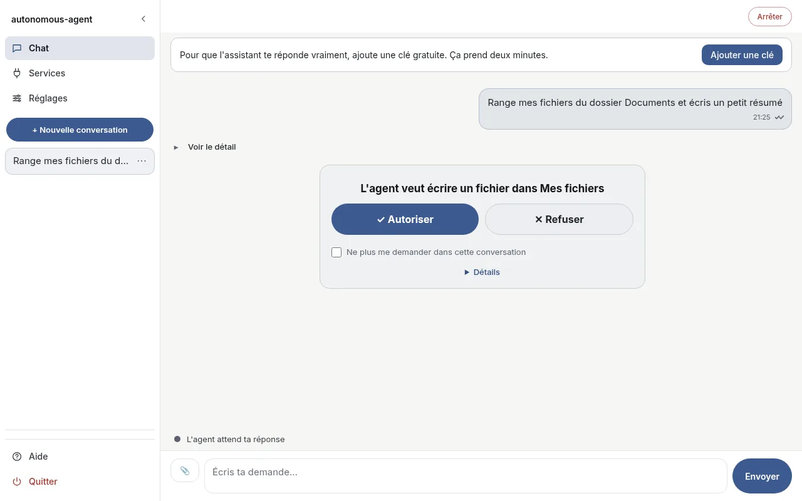
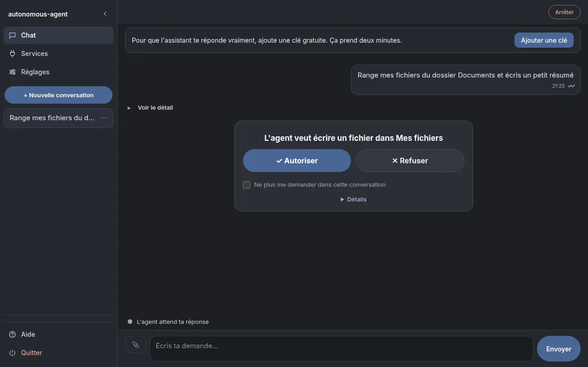

Ton assistant IA, sur ton ordinateur
Tu écris ce que tu veux en mots simples ; l'assistant fait le travail et te demande toujours avant toute action importante. Gratuit, et tes fichiers restent chez toi.
Gratuit · environ 10 Mo · sans inscription
Autres systèmes : Mac récent (M1, M2…)· Mac Intel· Windows· tous les fichiers


Installer en 3 étapes
-
1. Télécharge
Clique sur le gros bouton ci-dessus. Le fichier arrive dans ton dossier Téléchargements.
-
2. Ouvre-le
L'appli n'est pas encore signée : la première fois, ton ordinateur affiche une alerte. C'est normal, et tu ne le fais qu'une fois.
Sur Mac
- Double-clique sur le fichier .zip, puis glisse « AutonomousAgent » dans Applications.
- Fais un clic droit sur l'appli → Ouvrir, puis encore Ouvrir.
- Si le Mac propose seulement « Terminé » : ouvre Réglages Système → Confidentialité et sécurité, descends et clique « Ouvrir quand même », puis confirme.
Sur Windows
- Double-clique sur le fichier téléchargé.
- Une fenêtre bleue « Windows a protégé votre ordinateur » s'affiche : clique « Informations complémentaires », puis « Exécuter quand même ».
-
3. Choisis un fournisseur gratuit
L'appli s'ouvre avec un écran de bienvenue. Tu choisis une clé gratuite chez Groq ou Gemini (sans carte bancaire), ou Ollama sur ton ordinateur. Tu peux aussi essayer d'abord sans clé.
Questions fréquentes
C'est gratuit ?
Oui. L'application est gratuite. Tu peux utiliser Groq ou Gemini avec une clé gratuite, ou Ollama qui tourne entièrement chez toi.
Mes fichiers restent-ils chez moi ?
Oui. Tes fichiers et tes conversations restent sur ton ordinateur. L'application te demande toujours confirmation avant toute action importante.
Ça marche sans internet ?
Oui, avec Ollama. Groq et Gemini ont besoin d'internet, mais Ollama fonctionne entièrement hors ligne.